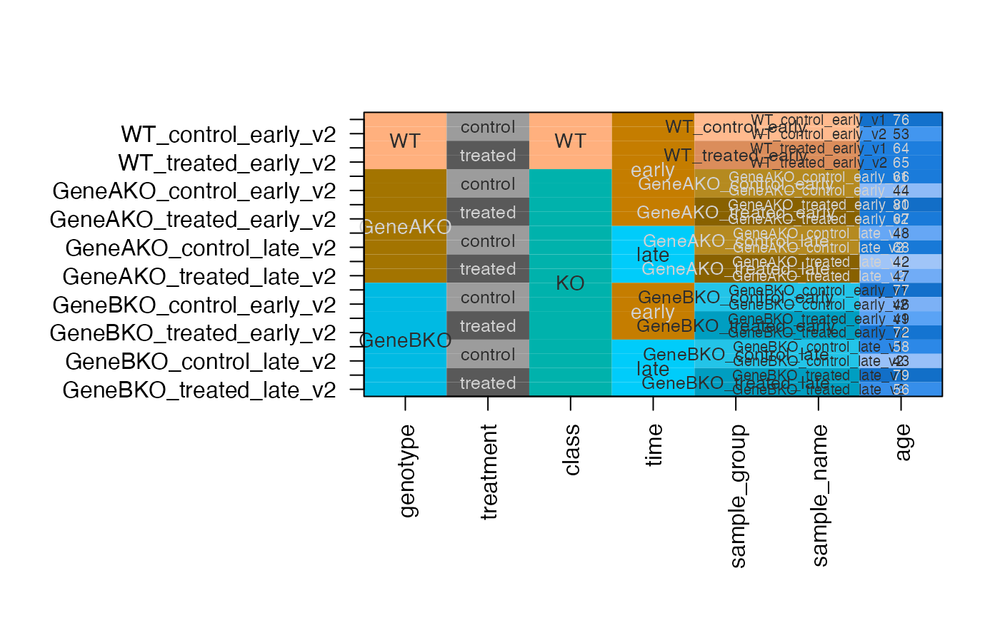
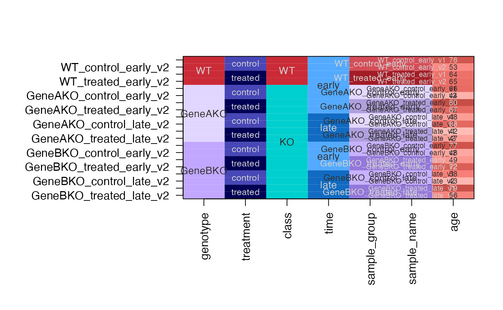
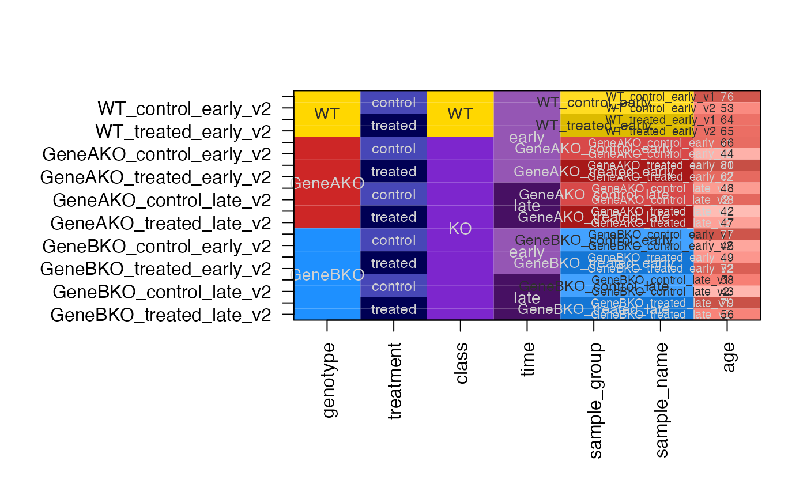
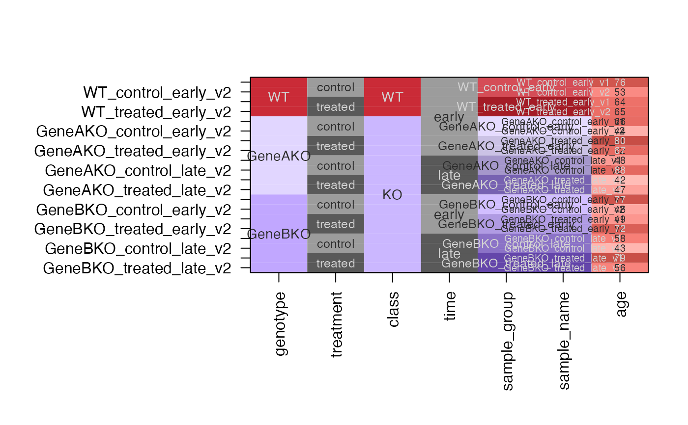
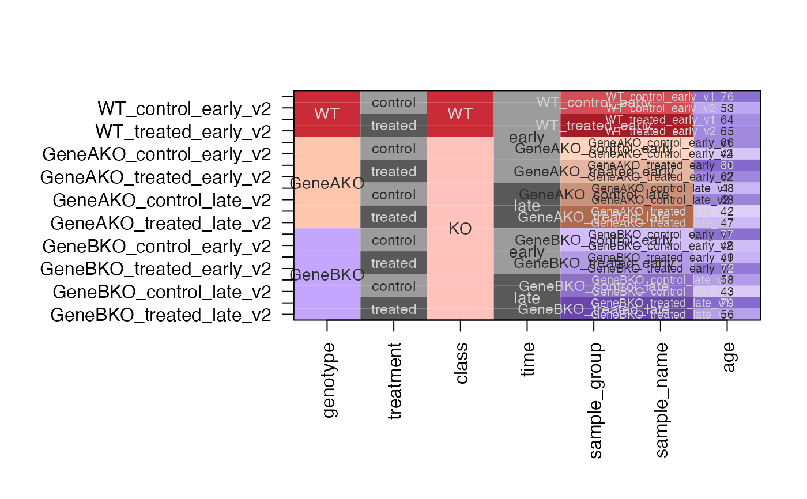
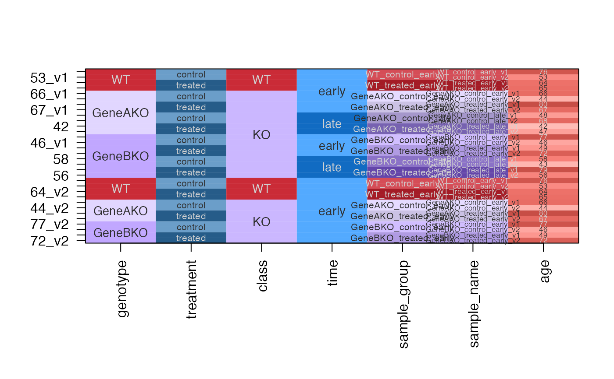

Convert experiment design into categorical colors
design2colors(
x,
group_colnames = NULL,
lightness_colnames = NULL,
class_colnames = NULL,
ignore_colnames = NULL,
preset = "dichromat2",
phase = 1,
rotate_phase = -1,
class_pad = 1,
end_hue_pad = 2,
hue_offset = 0,
desat = c(0, 0.4),
dex = c(2, 5),
Crange = c(70, 120),
Lrange = c(45, 90),
color_sub = NULL,
color_sub_max = NULL,
na_color = "grey75",
shuffle_colors = FALSE,
force_consistent_colors = TRUE,
plot_type = c("table", "list", "none"),
return_type = c("list", "df", "vector"),
verbose = FALSE,
debug = c("none", "cardinality"),
...
)data.frame with columns to be colorized,
DataFrame from Bioconductor S4Vectors package,
tbl_df from the tibble package, or matrix. In all cases
the data is coerced to data.frame without changing colnames,
and without imposing factor values per column, unless factors
were already encoded.
character or intger vector indicating
which colnames(x) to use, in order, for group color assignment.
character or intger vector indicating
which colnames(x) to use, in order, for group lightness gradient.
character or intger vector indicating
higher-level grouping of group_colnames
character string passed to colorjam::h2hwOptions(),
which defines the hues around a color wheel, used when selecting
categorical colors. Some shortcuts:
"dichromat": (default) uses color-blindness friendly color wheel,
minimizing effects of three types of color blindness mainly by
removing large chunks of the green color space.
"ryb": red-yellow-blue color wheel, which emphasizes the yellow
part of the wheel as a major color, as opposed to computer
monitor default that represents the red-green-blue color components.
"ryb2": red-yellow-blue color wheel, version 2, adjusted
to reduce effects of greenish-yellow for aesthetics.
"rgb": default red-green-blue color wheel used by computer
monitors to mimic the components of human vision.
integer value, phase is passed to
colorjam::rainbowJam() to define the light/dark pattern phasing,
which has 6 positions, and negative values reverse the order.
Categorical colors are assigned to the class/group combinations,
after which phase + rotate_phase is used for categorical colors
for any remaining values.
integer zero or greater, indicating the number
of empty hues to insert as a spacer between hues when the class
changes in a sequence of class/group values. Higher values will
ensure the hues in each class are more distinct from each other
across class, and more similar to each other within class.
integer used to pad hues at the end of a
color wheel sequence, typically useful to ensure the last color
is not similar to the first color.
numeric vector extended to length=2, used to desaturate
class/group colors, then remaining colors, in order. The intended
effect is to have class/group colors visibly more colorful than
remaining colors assigned to other factors.
numeric vector passed to jamba::color2gradient() to
define the darkness expansion factor, where 1 applies a moderate
effect, and higher values apply more dramatic light-to-dark
effect. When dex has length=2, the second value is used only
for columns where colors are assigned by colnames(x)
using color_sub.
numeric ranges passed to colorjam::rainbowJam()
to define slightly less saturated colors than the default rainbow
palette.
character vector of R colors, where names(color_sub)
assign each color to a character string. It is intended to allow
specific color assignments upfront.
colnames(x): when names(color_sub) matches a column name in x,
the color is assigned to that color using a color gradient across
the unique character values in that column. Values are assigned in
order of their appearance in x unless the column is a factor,
in which case colors are assigned to levels.
numeric optional value used to define a fixed
upper limit to a color gradient when a color is applied to
a numeric column.
When one value is defined for color_sub_max it is used for all
numeric columns uniformly.
When multiple values are defined for color_sub_max, then
names(color_sub_max) are used to associate to the appropriate
column matching with colnames(x).
character string with R color, used to assign a
specific color to NA values.
(This assignment is not yet implemented.)
logical indicating whether to shuffle categorical
color assignments for values not already assigned by
class/group/lightness, nor by color_sub. The effect is that colors
are less likely to be similar for adjacent column values.
logical indicating whether to force
color substitutions across multiple columns, when those columns
share one or more of the same values.
Note: This scenario is most
likely to occur when using color_sub to assign colors to a
specific column in colnames(x), and where that column may contain
one or more values already assigned a color earlier in the process.
For example: class/group/lightness defines colors for these columns,
then all columns are checked for cardinality with these color
assignments. Columns not appearing in color_sub will be colorized
when their cardinality is compatible with group colors, otherwise
specific values may be assigned colors via color_sub, then all
remaining values are assigned categorical colors. This process defines
colors for each column. The last step reassigns colors consistently
using the first value-color association that appears in the list,
to make sure all assignments are consistent. This last step is subject
of the argument force_consistent_colors. In either case, the
output color_sub will only have one color assigned per value.
Default TRUE: When colors are being assigned to column values
color_sub, if the value had been assigned a color in a previous
column, for example by group_colnames color assignment, then the
first assignment is applied to all subsequent assignments.
Optional FALSE: Color assignments are re-used where applicable,
except when overridden by color_sub for a particular column. In
that case, color assignments are maintained for each specific column.
character string indicating a type of plot for results:
"table": plots a color table equal to the input data.frame where
background cells indicate color assignments.
"list": plots colors defined for each column in x using
jamba::showColors()
"none": no plot is produced
character string indicating the data format to return:
"list": a list of colors, named by colnames(x).
"df": a data.frame in order of x with colors assigned to each cell.
"vector": a character vector of R colors, named by assigned
factor level.
logical indicating whether to print verbose output.
character string used to enable detailed debugging output.
additional arguments are passed to downstream functions.
output depends upon argument return_type:
"list": returns a list of colors defined by colnames(x),
suitable for use with ComplexHeatmap::HeatmapAnnotation() for example.
"df": returns data.frame of colors with same dimensions as the
input x. Suitable for use with jamba::imageByColors() for example.
"vector": returns character vector of R colors, whose names represent
values in x, where the values should be substituted with the color.
Suitable for use with ggplot2::color_manual(values=colors).
In all cases, the attributes() of the returned object also includes
colors in the other two formats: "color_sub", "color_df", and
"color_list".
The general goal is to assign categorical colors relevant to the experimental design of an analysis. The basic logic:
Assign categorical colors to experimental groups.
Shade these colors light-to-dark based upon secondary factors.
For step 1 above, optionally assign similar color hues by class.
When there are multiple factors in a design, the general guidance:
Define group_colnames using the first two factors in the design.
Define class_colnames using one of these two factors.
Values in group_colnames will be assigned rainbow categorical colors,
with extra spacing between each class. Values in one class will be
assigned similar color hues, for example one class may be red/orange,
another class may be blue/purple.
Optionally choose another factor to use as lightness_colnames.
When there are multiple unique values per group, they will be
shaded from light to dark within the group color hue.
It is sometimes helpful to create a column for class_colnames,
for example when a series of treatments can be categorized
by the type of treatment (agonists, antagonists, inhibitors,
controls).
Franky, we tend to try a few combinations until the output seems
intuitive. Then we assign specific values from other columns
using color_sub. Typically for numeric columns we assign
a color to the colname, and for categorical colors we assign
colors to values in the column.
Version 0.0.69.900 and higher: When the cardinality of group/class values is not 1-to-many, either the group/class assignments are switched in order to create 1-to-many cardinality, or a combination of the two vectors is used to create the appropriate cardinality.
By default, the unique rownames are used as if they were groups,
then colors are assigned using the same logic as usual. Any
other column whose values are 1-to-1 match with rownames will
inherit the same colors, otherwise character and factor
columns will be assigned categorical colors, and numeric
columns will be assigned a color gradient.
At its simplest a set of groups can be assigned categorical colors.
colors should be visibly distinct from one another
colors should generally be distinct across forms of color-blindness
colors should be consistent across plots, figures, tables
Finally, colors may be pre-defined using a named vector of colors. These colors will be propagated to other entries in the table.
The light-to-dark gradient is intended for ordered sub-divisions, for example:
across time points in a time series
across treatment doses in an ordered series
across ordered measurements first-to-last
The group classification is intended to assign color hues for similar groups:
antagonists, agonists, untreated
treated, untreated
wildtype, mutant form 1, mutant form 2, etc.
For example, antagonists may be assigned colors blue-to-purple; agonists may be assigned colors red-to-orange; with a pronounced color hue "gap" between antagonists and agonists.
Finally, other annotations associated with samples are assigned categorical colors, visibly distinct from other color assignments.
For entries associated with only one design color, for example "Sample_ID", "Sample Name", "Lane Number", or "Well Number", they inherit the design color.
For entries associated with more than one design color, for example "Batch", "Date", or perhaps "Dose", they will be assigned a unique color.
additional annotations unique to design colors inherit the design colors
additional categorical colors should not duplicate existing colors
Assign "additional factors" to colors based upon class
Currently "additional factors" are only tested by class_group and class_group_lightness.
It could be useful to test versus class alone (if supplied)
Goal would be to assign color hue using the mean color hue in the class.
Otherwise the class may be assigned a color inconsistent with the range of color hues.
Handle numeric columns by applying color gradient
A truly numeric column (not just integer index values) could
use circlize::colorRamp2() to apply color gradient
Other jam color functions:
assign_numeric_colors(),
df_to_numcolors(),
mean_hue(),
print_color_list(),
quick_complement_color()
df <- data.frame(
genotype=rep(c("WT", "GeneAKO", "GeneBKO"), c(4, 8, 8)),
treatment=rep(rep(c("control", "treated"), each=2), 5),
class=rep(c("WT", "KO"), c(4, 16)),
time=c(rep("early", 4),
rep(rep(c("early", "late"), each=4), 2)))
df$sample_group <- jamba::pasteByRow(df[,c("genotype", "treatment", "time")])
df$sample_name <- jamba::makeNames(df$sample_group);
df$age <- sample(40:80, size=nrow(df));
df
#> genotype treatment class time sample_group
#> 1 WT control WT early WT_control_early
#> 2 WT control WT early WT_control_early
#> 3 WT treated WT early WT_treated_early
#> 4 WT treated WT early WT_treated_early
#> 5 GeneAKO control KO early GeneAKO_control_early
#> 6 GeneAKO control KO early GeneAKO_control_early
#> 7 GeneAKO treated KO early GeneAKO_treated_early
#> 8 GeneAKO treated KO early GeneAKO_treated_early
#> 9 GeneAKO control KO late GeneAKO_control_late
#> 10 GeneAKO control KO late GeneAKO_control_late
#> 11 GeneAKO treated KO late GeneAKO_treated_late
#> 12 GeneAKO treated KO late GeneAKO_treated_late
#> 13 GeneBKO control KO early GeneBKO_control_early
#> 14 GeneBKO control KO early GeneBKO_control_early
#> 15 GeneBKO treated KO early GeneBKO_treated_early
#> 16 GeneBKO treated KO early GeneBKO_treated_early
#> 17 GeneBKO control KO late GeneBKO_control_late
#> 18 GeneBKO control KO late GeneBKO_control_late
#> 19 GeneBKO treated KO late GeneBKO_treated_late
#> 20 GeneBKO treated KO late GeneBKO_treated_late
#> sample_name age
#> 1 WT_control_early_v1 76
#> 2 WT_control_early_v2 53
#> 3 WT_treated_early_v1 64
#> 4 WT_treated_early_v2 65
#> 5 GeneAKO_control_early_v1 66
#> 6 GeneAKO_control_early_v2 44
#> 7 GeneAKO_treated_early_v1 80
#> 8 GeneAKO_treated_early_v2 67
#> 9 GeneAKO_control_late_v1 48
#> 10 GeneAKO_control_late_v2 68
#> 11 GeneAKO_treated_late_v1 42
#> 12 GeneAKO_treated_late_v2 47
#> 13 GeneBKO_control_early_v1 77
#> 14 GeneBKO_control_early_v2 46
#> 15 GeneBKO_treated_early_v1 49
#> 16 GeneBKO_treated_early_v2 72
#> 17 GeneBKO_control_late_v1 58
#> 18 GeneBKO_control_late_v2 43
#> 19 GeneBKO_treated_late_v1 79
#> 20 GeneBKO_treated_late_v2 56
dfc <- design2colors(df,
group_colnames="genotype",
lightness_colnames="treatment",
class_colnames="class",
color_sub=c(age="dodgerblue"))

# same as above except assign colors to columns and some values
dfc <- design2colors(df,
group_colnames="genotype",
lightness_colnames="treatment",
class_colnames="class",
preset="dichromat",
color_sub=c(KO="firebrick3",
treatment="navy",
class="cyan",
time="dodgerblue"))

# same as above except assign specific group colors
dfc <- design2colors(df,
group_colnames="genotype",
lightness_colnames="treatment",
class_colnames="class",
preset="dichromat",
color_sub=c(
WT="gold",
KO="purple3",
GeneAKO="firebrick3",
GeneBKO="dodgerblue",
treatment="navy",
time="darkorchid4"))

dfc2 <- design2colors(df,
group_colnames="genotype",
lightness_colnames=c("time", "treatment"),
class_colnames="class",
preset="dichromat")

dfc3 <- design2colors(df,
group_colnames=c("genotype"),
lightness_colnames=c("time", "treatment"),
class_colnames="genotype",
rotate_phase=TRUE,
preset="dichromat")

df1 <- df;
df2 <- subset(df, time %in% "early");
df12 <- rbind(df1, df2);
dfc12 <- design2colors(df12,
group_colnames="genotype",
lightness_colnames=c("time", "treatment"),
class_colnames="class",
preset="dichromat",
color_sub=c(
treatment="steelblue",
time="dodgerblue"
))
